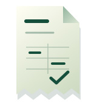

Le reçu plié
Le symbole de départ retrouve du relief et une structure comptable.

LedgerFlowÉtude graphique · 01Une identité pour l’agent qui transforme vos justificatifs en écritures compréhensibles.
Des lignes continues qui se déforment lentement. Un cycle de 18 secondes, sans coupure.
Télécharger les vagues animées · SVG ↗Des fichiers vectoriels à utiliser dans l’application.
Trois mouvements pour l’ouverture, le travail de l’agent et la lecture d’une pièce. Aperçus graphiques, sans traitement comptable en cours.
Aperçu de lancement